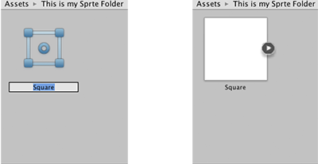

Sprite Creator
With this tool you can create temporary placeholder sprite (2D) graphics. You can use these in your project during development and then replace them with the graphics you want to use.
Accessing the Sprite Creator
Select Assets>Create>Sprites and then select the placeholder sprite you want to make (square, triangle, diamond, hexagon, or polygon).

Using the Sprite
Your new placeholder sprite appears as a white shape in the asset folder you currently have open. The new sprite's name defaults to its shape name but you have the option to rename your sprite when it is first created. If you are not sure what you want to call it, leave it as the default; you can change it later by clicking on it.

You can drag and drop your placeholder sprite into the Scene View or Hierarchy to start using it in your project.

Replacing your Placeholder Sprite
To change your placeholder sprite, click on it in the Scene View and then edit via the Sprite Renderer Component in the Inspector.

Edit the Sprite field: You can click on the small circle to the right of the input field to bring up the Sprite Selector where you can browse and select from a menu of available 2D graphic assets.

Details
- The Sprite Creator makes 4x4 white PNG outline textures.
- The placeholder sprites are perfect primitive polygons (e.g. triangle, hexagon, n-sided polygon), generated by algorithm.
- NOTE: Placeholder sprites are not like 3D primitives: A sprite is an asset, and as a many-sided polygon, may represent many different shapes, so placeholder sprites are not built like 3D primitives.